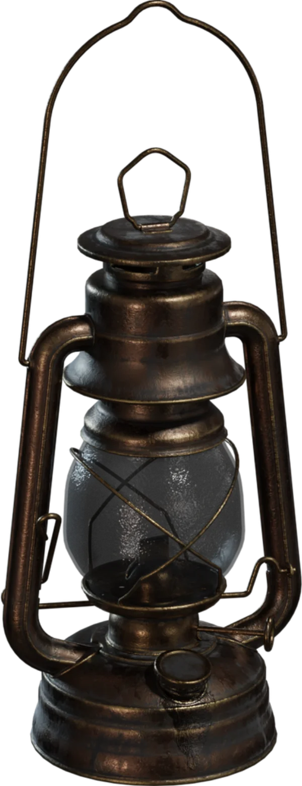
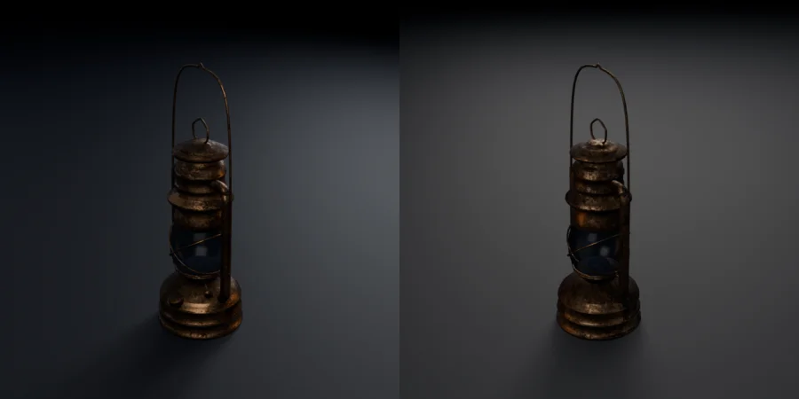
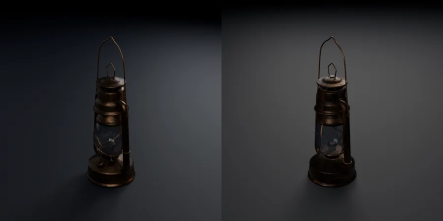
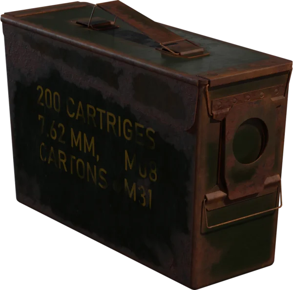
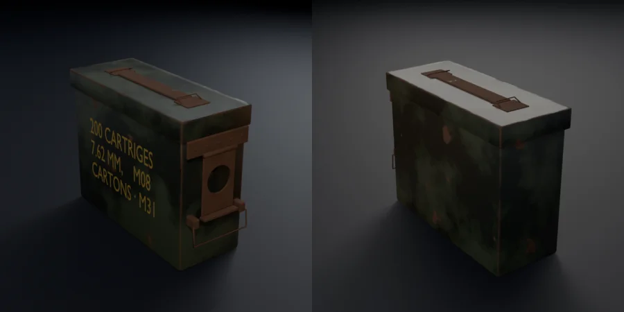
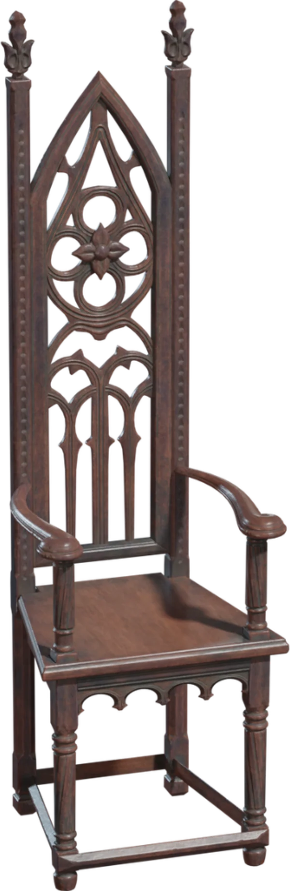
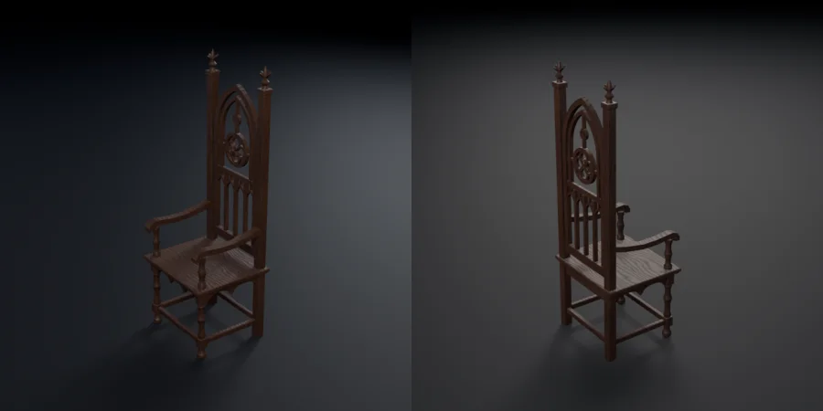

Each row: the Poly Haven preview both tools were given, the exact prompt each received, and the GLB each shipped, re-imported and rendered under the same studio light by the bench. Reference images: Poly Haven (polyhaven.com), CC0, fetched through its public API.
| input | ref-kiln | ref-img2threejs |
|---|---|---|
 reference — Poly Haven prompt sent to kiln/kiln Rebuild the hurricane lantern in this reference image as a game asset: Lantern_01.png. Type: prop. Style: realistic. Export: glTF. Detail tier: balanced. Mode: auto. Storage: compact. Create it by scripted modeling in Blender from the image — no marketplace, no AI generation. Match the reference's proportions, parts, materials and colours as closely as you can. Output folder (absolute): <run folder>/generated-assets prompt sent to img2threejs/img2threejs Rebuild the object in reference.png as a procedural Three.js model. Match the reference's proportions, parts, materials and colours as closely as you can. Write the factory to src/model.ts, exporting `createModel(): THREE.Group`. Use 1 unit = 1 metre, with the object standing on y = 0. The host project in this folder is ready (three 0.180, vite, TypeScript, node_modules installed). `npx vite --port <free port>` serves it; `src/main.ts` frames and lights whatever createModel() returns. For your side-by-side reviews, capture the render with `npx playwright screenshot --wait-for-timeout 3000 http://localhost:<port>/ shot.png`. Work autonomously and do not ask questions: this is a non-interactive run. |  kiln — 6,852 tris · 0.95 MB · 20 meshes · 0 fused edges |  img2threejs — 41,736 tris · 3.54 MB · 44 meshes · 0 fused edges Partial: stopped after the 'form' pass (3 of 8). Exported by the bench from src/model.ts as it stood. |
 reference — Poly Haven prompt sent to kiln/kiln Rebuild the ammo box in this reference image as a game asset: ammo_box.png. Type: prop. Style: realistic. Export: glTF. Detail tier: balanced. Mode: auto. Storage: compact. Create it by scripted modeling in Blender from the image — no marketplace, no AI generation. Match the reference's proportions, parts, materials and colours as closely as you can. Output folder (absolute): <run folder>/generated-assets |  kiln — 1,769 tris · 0.10 MB · 16 meshes · 0 fused edges | not run under ref-img2threejs |
 reference — Poly Haven prompt sent to kiln/kiln Rebuild the wooden chair in this reference image as a game asset: WoodenChair_01.png. Type: prop. Style: realistic. Export: glTF. Detail tier: balanced. Mode: auto. Storage: compact. Create it by scripted modeling in Blender from the image — no marketplace, no AI generation. Match the reference's proportions, parts, materials and colours as closely as you can. Output folder (absolute): <run folder>/generated-assets |  kiln — 5,792 tris · 0.17 MB · 25 meshes · 0 fused edges | not run under ref-img2threejs |